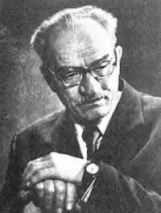
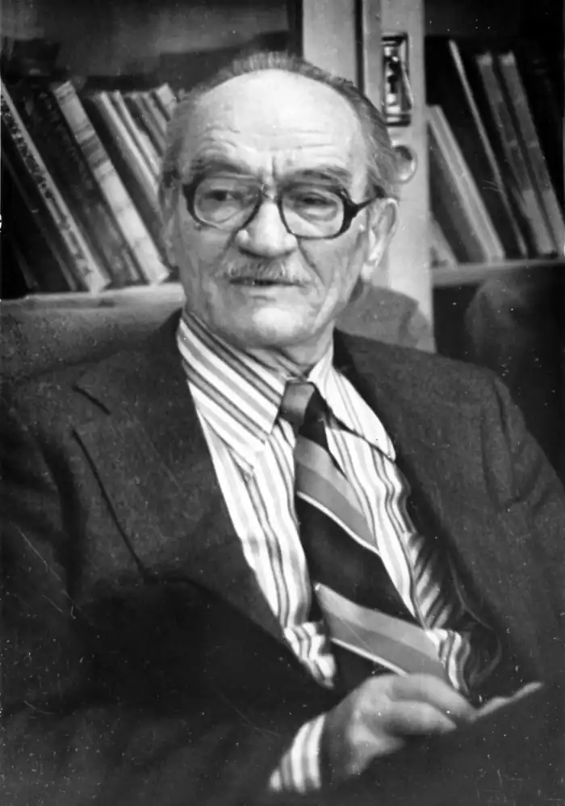

Троєпольскій Гавриїл Миколайович — російський письменник, автор повістей і оповідань. З'явився на світ в 1905 році у Воронезькій області.
Гавриїл Троєпольскій навчався спочатку в Новохоперській гімназії, після здобував освіту в сільськогосподарському училищі. По його закінченню працював сільським учителем і агрономом у колгоспі, вивів новий сорт просо і написав ряд наукових статей по його селекції.
Літературний дебют Гавриїла Миколайовича відбувся в 1937 році, коли побачила світ його перше оповідання. З 1938 року нариси Троєпольского регулярно публікувалися в друкованих виданнях. У роки Великої Вітчизняної війни Гавриїл Троєпольскій служив військовим кореспондентом і співпрацював з німецькими окупаційними газетами, за що був засуджений владою і не міг виїжджати до великих міст. Популярність до письменника Гавриїлу Троєпольского прийшла в 1953 році, коли в друкованому виданні "Новий світ" вийшов сатиричний цикл "Із записок агронома". Письменник переїхав до Воронежа. У наступні роки побачили світ його твори "Чорнозем", "Кандидат наук", "Постояльці", "В очеретах". Безсумнівно, найпопулярнішим твором Гавриїла Троєпольского став "Білий Бім, Чорне вухо", опублікований в 1971. За мотивами повісті режисер Станіслав Ростоцький зняв однойменний фільм, який отримав "Оскар" в номінації "Кращий іноземний фільм". Письменник Гавриїл Троєпольський пішов з життя в 1995 році.